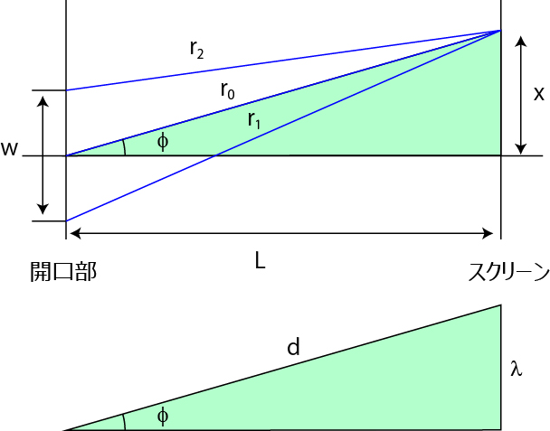
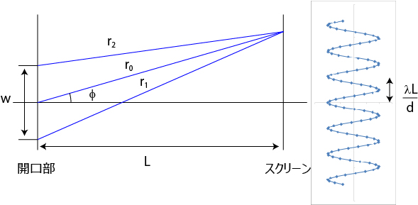

像分布関数 (PSF , Point spread function) について-04
\( \Large sin \phi = \frac{\lambda}{w} n \)
という関係式と，最初のモデルから，以下の二つの三角形を表すことができます．
これは相似形となりますね．
また，中央付近の間隔なので，n=1，としました．

相似の関係から，
\( \Large \sqrt{L^2 + x^2} : x = w : \lambda \)
となります．
\( \Large L^2 + x^2 = \frac{x^2 w^2}{ \lambda^2} \)
\( \Large x^2 = \frac{\lambda^2 L^2}{ w^2-\lambda^2} \)
ここで，ここに記載したように，
\( \Large w >> \lambda \)
となりますので，
\( \Large x = \frac{\lambda L}{ w} \)
となります．
つまり，

となります．
次に，この結像面での強度分布を計算してみましょう．